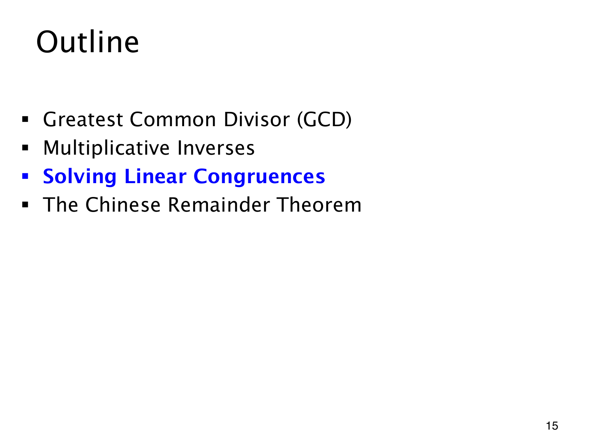

L1.13 · 第 15 页讲解原文
查看这一页课件

将逆元用于含未知数的同余式
目录进入第三部分 Solving Linear Congruences（求解线性同余方程），具体方程会在后面展开。此前已能用欧几里得算法判断互素，再用扩展算法求逆元。
面对含未知整数的同余式，也希望把未知数单独留下。不过“除以系数”必须由乘上合法的逆元实现，所以先检查系数是否与模数互素，再决定能否这样变形。
找到一个整数解之后，还要说明答案的范围。同余方程通常允许所有与它在指定模数下同余的整数，不能只把一个代表当作全部解。